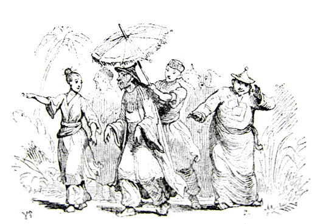
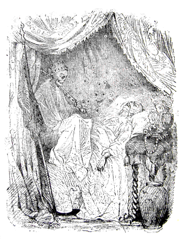

みなさん、よくごぞんじのように、シナでは、皇帝はシナ人で、またそのおそばづかえのひとたちも、シナ人です。
さて、このお話は、だいぶ昔のことなのですがそれだけに、たれもわすれてしまわないうち、きいておくねうちもあろうというものです。
ところで、そのシナの皇帝の
なにしろ、とても大したお金をかけて、ぜいたくにできているかわり、こわれやすくて、うっかりさわると、あぶないので、よほどきをつけてそのそばをとおらなければなりません。
さて、この林のなかに、うつくしいこえでうたう、一
「どうもたまらない。なんていいこえなんだ。」と、漁師はいいましたが、やがてしごとにかかると、それなり、さよなきどりのこともわすれていました。でもつぎの
「どうもたまらない、なんていいこえなんだ。」
せかいじゅうのくにぐにから、
「どうもこれがいっとうだな。」といいました。で、旅行者たちは、国にかえりますと、まずことりのはなしをしました。学者たちは、その都と御殿と御苑のことをいろいろと本にかきました。でもさよなきどりのことはけっして忘れないどころか、この国いちばんはこれだときめてしまいました。それから、詩のつくれるひとたちは、深いみずうみのほとりの林にうたう、さよなきどりのことばかりを、この上ないうつくしい詩につくりました。
こういう本は、世界じゅうひろまって、やがてそのなかの二三冊は、皇帝のお手もとにとどきました。皇帝は金のいすにこしをかけて、なんべんもなんべんもおよみになって、いちいちわが意をえたりというように、うなずかれました。ごじぶんの都や御殿や御苑のことを、うつくしい筆でしるしているのをよむのは、なるほどたのしいことでした。
「さはいえど、なお、さよなきどりこそ、こよなきものなれ。」と、そのあとにしかし、ちゃんとかいてありました。
「はてな。」と、皇帝は首をおかしげになりました。「さよなきどりというか。そんな鳥のいることはとんとしらなかった。そんな鳥がこの帝国のうちに、しかも、この庭うちにすんでいるというのか。ついきいたこともなかったわい。それほどのものを、本でよんではじめてしるとは、いったいどうしたことだ。」
そこで皇帝は、さっそく
「この本でみると、ここにさよなきどりというふしぎな鳥がいることになっているが。」と、皇帝はおたずねになりました。「しかもそれがわが
「わたくしもまだ、そのようなもののあることは、うけたまわったことがございません。」と、侍従長はいいました。「ついぞまだ、
「こんばん、さっそく、そのさよなきどりとやらをつれてまいって、わがめんぜんでうたわせてみせよ。」と、皇帝はおっしゃいました。「みすみす、じぶんがもっていて、世界じゅうそれをしっているのに、かんじんのわたしが、しらないではすまされまい。」
「ついぞはや、これまでききおよばないことでございます。」と、侍従長は申しました。「さっそくたずねてみまする。みつけてまいりまする。」
さて、そうはおこたえ申しあげたものの、どこへいって、それをみつけたものでしょう。侍従長は御殿じゅうの
「おそれながら
「いや、しかし、わたしがこの鳥のことをよんだ本というのは、」と、皇帝はおっしゃいました。「
「チン ペ。」と、侍従長は申しました。それからまた、ありったけの階段を上ったり下りたり、廊下や広間をのこらずかけぬけました。御殿の役人たちも、たれでも横ッ腹をふみにじられたくはないので、そのはんぶんは、いっしょになって、かけまわりました。そこで、世界じゅうがしっていて、御殿にいるひとたちだけがしらない、ふしぎな、さよなきどりのそうさくが、はじまりました。
とうとうおしまいに、役人たちのつかまえたのは、お
「まあ、さよなきどりですって、わたしはよくしっておりますわ。ええ、なんていいこえでうたうでしょう。まいばん、わたくしは、びょうきでねている、かわいそうなかあさんのところへ、ごちそうのおあまりを、いただいてもっていくことにしておりますの。かあさんは、
「これこれ、女中。」と、侍従長はいいました。「おまえに、お台所でしっかりした役をつけてやって、おかみがお
そこでみんな、そのむすめについて、さよなきどりがいつもうたうという、林のなかへはいって行きました。御殿のお役人が、はんぶんまで、いっしょについていきました。みんながぞろぞろ、ならんであるいて行きますと、いっぴきのめうしが、もうと、なきだしました。
「やあ。」と、わかい
「いいえ、あれはめうしが、うなっているのよ。」と、お台所の下ばたらきむすめがいいました。
「鳥のところまでは、まだなかなかですわ。」
こんどはかえるが、ぬまの中で、けろけろとなきはじめました。
「りっぱなこえだ。」と、皇室づきの
「いいえ、あれはかえるでございますわ。」と、お台所むすめはいいました。「でも、ここまでくれは、もうじき鳥もきこえるでしょう。」
こういっているとき、ちょうどさよなきどりが、なきはじめました。
「ああ、あれです。」と、むすめはいいました。「ほら、あすこに、とまっているでしょう。」
こういって、このむすめは、むこうの
「はてね。」と、侍従長はいいました。「あんなようすをしているとは、おもいもよらなかったよ。なんてつまらない鳥なんだ。われわれ
「さよなきどりちゃん。」と、お台所むすめは、大きなこえで、いいました。「
「それはけっこうこの上なしです。」と、さよなきどりはいいました。そうして、さっそくうたいだしましたが、そのこえのよさといったらありません。
「まるで
「陛下さまのごぜんですから、もういちどうたうことにいたしましょうか。」と、さよなきどりはいいましたが、それは、皇帝ごじしんそこの場にきておいでになることと、おもっていたからでした。
「いや、あっぱれなる
「わたしのうたは、林の青葉の中できいていただくのに、かぎるのですがね。」と、さよなきどりはいいました。でも、ぜひにという陛下のおのぞみだときいて、いそいそついていきました。
御殿はうつくしく、かざりたてられました。せとものでできているかべも、ゆかも、
皇帝のおでましになる大ひろまのまん中に、金のとまり木がおかれました。それにあのさよなきどりがとまることになっていました。宮中の役人たちのこらず、そこにならびました。あのお台所の下ばたらきむすめも、いまではせいしきに、宮中づきのごぜん
さて、さよなきどりは、まことにすばらしくうたってのけたので、皇帝のお目にはなみだが、みるみるあふれてきて、それがほおをつたわって、ながれおちたほどでした。するとさよなきどりは、なおといっそういいこえで、それは、人びとのこころのおくそこに、じいんとしみいるように、うたいました。陛下は、たいそう、およろこびになって、さよなきどりのくびに、ごじぶんの、金のうわぐつをかけてやろうとおっしゃいました。しかし、さよなきどりは、ありがとうございますが、もうじゅうぶんに、ごほうびは、いただいておりますといいました。
「わたくしは、陛下のお目になみだのやどったところを、はいけんいたしました。もうそれだけで、わたくしには、それがなによりもけっこうなたからでございます。皇帝の涙というものは、かくべつなちからをもっております。神かけて、もうそれが身にあまるごほうびでございます。」
こういって、そのとき、さよなきどりは、またもこえをはりあげて、あまい、たのしいうたをうたいました。
「まあ、ついぞおぼえのない、いかにもやさしくなでさすられるようなかんじでございますわ。」と、まわりにたった
この
さて、さよなきどりは、それなり宮中にとめられることになりました。じぶん用のとりかごをいただいて、まいにち、ひる二どと、よるいちどとだけ、外出をゆるされました。でかけるときには、十二人のめしつかいがひとりひとり、とりのあしにむすびつけたきぬいとを、しっかりもって、おともをして行きました。こんなふうにしてでかけたのでは、いっこうにおもしろいはずがありませんでした。
このめずらしいさよなきどりのことは、みやこじゅうのひょうばんになりました。そうして、ふたりであえば、そのひとりが、
「＊さよ。」と、いうと、あいては、「なき。」とこたえます。
＊デンマークの原語では「ナデル（小夜）」。「ガール（啼鳥）」。「ガール」にはおばかさんの意味もある。
それから、ふたりはほっとためいきをついて、それでおたがい、わけがわかっていました。いや、物売のこどもまでが、十一人も、さよなきどりという名をつけられたくらいです。でも、そのうちのひとりとして、ふしらしいもののうたえるのどでは、ありませんでした。――ところで、ある日、皇帝のおてもとに、大きな
「さあ、わが国の有名なことりのことを書いたしょもつが、またきたわい。」
皇帝はこうおっしゃいましたが、こんどは、本ではなくて、はこにはいった、ちいさなさいく
「日本皇帝のさよなきどり、中華皇帝のそれにはおよびもつかぬ、おはずかしきものながら。」と、書いてありました。
「これはたいしたものだ。」と、みんなはいいました。そうして、このさいく
「いっしょになかしたら、さぞおもしろい二部
そこで、ふたつのさよなきどりは、いっしょにうたうことになりました。でも、これはうまくいきませんでした。それは、ほんもののさよなきどりは、かってに、じぶんのふしでうたって行きましたし、さいく物のことりは、ワルツのふしでやったからでした。
「いや、これはさいく物のことりがわるいのではございません。」と、
そこで、こんどは、さいく物のことりだけがうたいました。ほんもののとおなじようにうまくやって、しかもちょいとみたところでは、ほんものよりは、ずっときれいでした。それはまるで
さいく物のことりは、おなじところを三十三回も、うたいましたが、くたびれたようすもありませんでした。みんなはそれでも、もういちどはじめから、ききなおしたいようでしたが、皇帝は、いきているさよなきどりにも、なにかうたわせようじゃないかと、おっしゃいました。――ところが、それはどこへいったのでしょう。たれひとりとして、ほんもののさよなきどりが、あいていたまどからとびだして、もとのみどりの森にかえっていったことに、気づいたものは、ありませんでした。
「いったい、これはどうしたというわけなのか。」と、皇帝はおっしゃいました。ところが、御殿の人たちは、ほんもののさよなきどりのことを、わるくいって、あのさよなきどりのやつ、ずいぶん恩しらずだといいました。
「なあに、こちらには、世界一上等の鳥がいるのだ。」と、みんないいました。
そこで、さいく物のことりが、またうたわせられることになりました。これで三十四回おなじうたをきくわけになったのですが、それでもなかなか、ふしがむずかしいので、たれにもよくおぼえることができませんでした。で、楽師長は、よけいこのとりをほめちぎって、これはまったく、ほんもののさよなきどりにくらべて、つくりといい、たくさんのみごとなダイヤモンド飾りといい、ことさら、なかのしかけといったら、どうして、ほんものよりはずっとりっぱなものだといいきりました。
「なぜと申しまするに、みなさま、とりわけ陛下におかせられまして、ごらんのとおり、ほんもののさよなきどりにいたしますると、つぎになにをうたいだすか、まえもって、はかりしることができません。しかるに、このさいくどりにおきましては、すべてがはっきりきまっております。かならずそうなって、かわることがございません。これはこうだと、せつめいができます。なかをあけて、どうワルツがいれてあるか、それがうたいすすんで、歌がつぎからつぎへとうつって行きますぐあいを、人民ども、だれのあたまにもはいるように、しめしてみせることが、できるのでございます――。」
「まったくご
そこで、楽師長は、さっそく、つぎの
「なかなかいいこえでうたうし、ふしもにているが、どうも、なんだかものたりないな。」といいました。
ほんもののさよなきどりは、都の土地からも、国からもおわれてしまいました。
さいくどりは、皇帝のお
そうこうしているうちに、まる一年たちました。皇帝も、宮中のお役人たちも、みんなほかのシナ人たちも、そのさいくどりの歌の、クルック、クルック、という、こまかいふしまわしのところまでのこらずおぼえこんでしまいました。ところでそのためよけい、この鳥がみんなをよろこばせたというわけは、たれもいっしょになって、その歌をうたうことができたからで、またほんとうに、そのとおりやっていました。往来をあるいているこどもたちまでが、
「チチチ、クルック、クルック、クルック」と、うたうと、皇帝もそれについておうたいになりました。――いや、もうまったくうれしいことでした。
ところがあるばん、さいくどりに、せいいっぱいうまくうたわせて、皇帝はね床の中でそれをきいておいでになるうち、いきなり、鳥のおなかの中で、ぶすっという音がして、なにかはぜたようでした。つづいて、がらがらがらと、のこらずのはぐるまが、からまわりにまわって、やがて、ぶつんと音楽はとまってしまいました。
皇帝はすぐとね床をとびおきて、
さて、それから五年たちましたが、こんどこそはほんとうに、国じゅうの大きなかなしみがやってきました。じんみんたちが、こころからしたっていた皇帝が、こんど、ごびょうきにかかられて、もうながいことはあるまいという、うわさがたちました。あたらしい皇帝も、もうかわりにえらばれていました。じんみんたちは
ひえこおった青いかおをして、皇帝は、うつくしくかざりたてた、大きなおねだいに、よこになっておいでになりました。宮中の役人たちは、もう皇帝は、おなくなりになったと、おもって、われがちに、あたらしい皇帝のところへ、おいわいのことばを、申しあげに出かけていきました。その下のめし使のおとこたちも、そここことかけまわって、そのことでしゃべりあいました。めし使の女たちもあつまって、さかんなお茶の会をやっていました。広間にも、廊下にも、のこらず、ぬのがしかれているので、なんの足音もきこえず、御殿の中はまったく、しんかんとしていました。
けれども陛下は、まだおかくれになったというわけではなく、やせほそり、色は青ざめながら、ながいびろうどのとばりをたれて、どっしりとおもい金のふさのさがった、きらびやかなしんだいの上にやすんでおいでになりました。高いところにあるまどが、あけてあって、そこからさしこむ月のひかりが、陛下とそのそばにおかれた、さいくもののさよなきどりを、てらしていました。

おかわいそうに、皇帝は、まるでなにかが、むねの上にのってでもいるように、いきをすることもむずかしいようすでした。陛下が目をみひらいて、ごらんになると、おむねの上には、
「このことを、おぼえているか。」
「こんなことも、やったろう。」
と、かわるがわる、そのくびが、ささやきました。それから、つづいて、がやがやしゃべりたてるので、皇帝のひたいからは、ひやあせが、ながれました。
「わたしは、そんなことは、しらないぞ。」と、皇帝は、おっしゃいました。
「音楽をやってくれ、音楽を。たいこでも、がんがんたたいて、あのこえの、きこえないようにしてくれ。」と、陛下はおさけびになりました。けれども、くびはかまわず、なおもはなしつづけました。そうして死神は、くびのいったことには、どんなことでも、シナ人らしくうなずいてみせました。
「音楽をやってくれ、音楽を。小さいうつくしい金のことりよ。うたってくれ。まあうたってくれ。おまえには、こがねもやった。
ところが、そのことりは、じっとしていました。あいにく、たれも、ねじをまいてやるものがなかったので、このことりは、うたうことができなかったのでございます。
そのとき、きゅうにまどのとこから、この上もないかわいらしいうたが、きこえてきました。それは、まどのそとの枝にとまった、あの小さな、ほんもののさよなきどりがうたったものでした。さよなきどりは、皇帝がご病気だときいて、なぐさめてあげるために、げんきをつけてあげるために、歌をうたいに、やってきたのでした。さよなきどりが、うたうにつれて、あやしいまぼろしは、だんだん影がうすれて行きました。血は皇帝のおからだの中を、とっとっとまわりだしました。死神さえ、耳をとめて、そのうたをきいて、こういいました。
「もっとうたってくれ、さよなきどりや。もっとうたってくれ。」
「はい。そのかわり、あなたは、そのこがねづくりのけんをくれますか。そのりっぱなはたをくれますか。皇帝のかんむりをくださいますか。」
そこで死神は、うたをひとつうたってもらうたんびに、かわりに、三つのたからを、ひとつずつやりました。
さよなきどりは、ずんずんうたいつづけました。そして、まっしろなばらの花が咲いて、にわとこの花がにおい、青あおした草が、いきのこっている人たちのなみだでしめっているはかばのことをうたいました。きいているうち、死神はふと、じぶんの庭がみたくなったものですから、まどのところから、白いつめたい
「ありがとう、ありがとう。」と、皇帝はおっしゃいました。「天国のことりよ、わたしはよくおまえをおぼえているぞ。わたしはおまえを、この国からおいだしてしまったが、それでもおまえは、わたしのねどこから、いやなつみのまぼろしを、歌でけしてくれた。わたしのしんぞうに、とりついた死神を、おいはらってくれた。そのほうびには、なにをあげたものであろうか。」
「そのごほうびなら、もういただいております。わたくしがはじめて、ごぜんでうたいましたとき、陛下には、なみだをおながしになりました。わたくしは、けっしてあれをわすれはいたしません。あのおなみだこそ、歌をうたうものの、こころをよろこばす、宝石でございます。なにはとにかく、おやすみあそばせ。そうして、またおげんきに、お
そこで、さよなきどりは、うたいだしました。――それをききながら、皇帝は、こころもちよく、ぐっすりと、おやすみになりました。まあ、どんなにそのねむりは、やすらかに、こころのやすまる力をもつものでしたろう。
皇帝はまた、げんきがでて、すっかりご丈夫になって、目をおさましになったとき、お日さまは、まどのところから、さしこんでいました。おそばづきの人たちは、陛下がおかくれになったこととおもって、ひとりもまだ、かえってきていませんでした。ただ、さよなきどりだけは、やはりおそばにつきそって、歌をうたっていました。
「おまえは、いつもわたしのそばにいてくれなければいけない。」と、皇帝はおっしゃいました。「おまえのすきなときだけ、うたってくれればいいぞ。こんなさいくどりなどは、こなごなに、たたきこわしてしまおう。」
「そんなことを、なすってはいけません。」と、さよなきどりはいいました。「そのことりも、ずいぶんながらくおやくにたちました。いままでどおりに、おいておやりなさいまし。わたくしは、御殿の中に、巣をつくって、すむわけには、まいりませんが、わたくしがきたいとおもうとき、いつでもこさせていただきましょう。そうしますと、わたくしは晩になりまして、あのまどのわきの枝に、とまります。そして、陛下のおこころがたのしくもなり、また、おこころぶかくなりますように、歌をうたって、おきかせ申しましょう。そうです、わたくしは、幸福なひとたちのことをも、くろうしている人たちのことをも、うたいましょう。あなたのお身のまわりにかくれておりますわるいこと、よいこと、なにくれとなくうたいましょう。まずしい漁師のやどへも、お
――「どんなことでも。」と、皇帝はおっしゃりながら、たちあがって、ごじぶんで皇帝のお服をめして、金のかざりでおもくなっている
「それでは、このひとつのことを、おやくそく、くださいまし。それは、陛下が、なにごとでも、はばかりなくおはなし申しあげることりをおもちになっていらっしゃることを、だれにもおもらしにならないということでございます。そういたしますと、なおさら、なにごともつごうよくまいることでしょう。」
こういって、さよなきどりは、とんでいきました。
おつきの人たちは、そのとき、おかくれになった陛下のおすがたを、おがむつもりで、はいってきましたが――おや、っと、そのまま
「みなのもの、おはよう。」